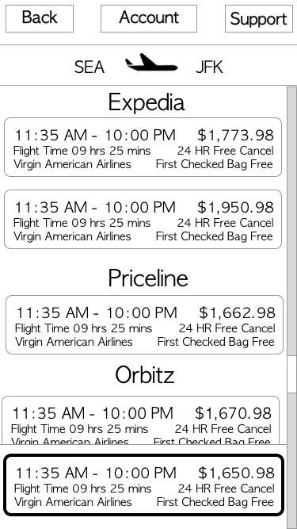
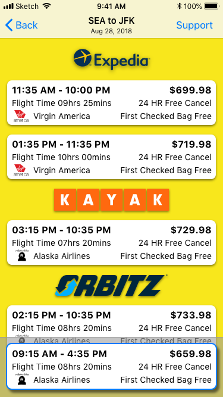

Deliver Phase
With a minimum viable product complete, I designed one Hi-Fi comprehensive while making sure that I adhere to the Human Interface Guidelines. During the usability tests, my users preferred the flight data chunked together and then sorted by the website or company as it is less overwhelming.
Wireframe
Hi-Fi Comprehensive
 Hi-Fi Comp. Mock Up
Hi-Fi Comp. Mock Up